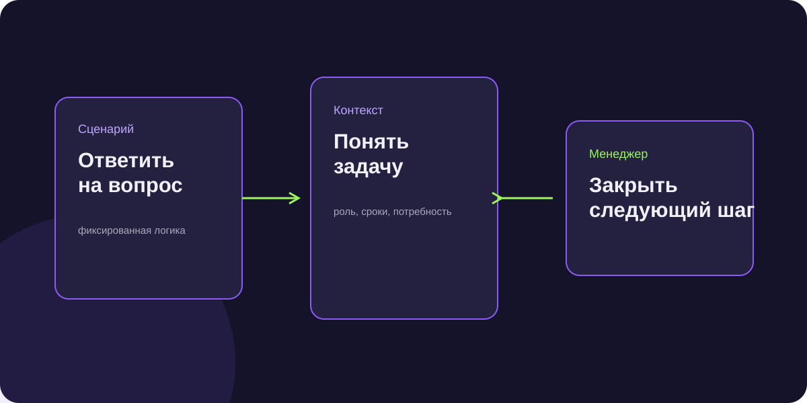

Чат-бот или ИИ-продавец: что выбрать бизнесу для продаж в мессенджерах
Инструменты похожи только снаружи: оба отвечают в чате. Но сценарный бот ведёт пользователя по заданной логике, а ИИ-агент работает с неструктурированным диалогом и контекстом. Выбор зависит от того, где именно возникает потеря в воронке.

Короткий ответ
Если клиенту достаточно выбрать кнопку, получить статус или пройти фиксированную анкету — начинайте с чат-бота. Если нужно понять свободный ответ, задать уточняющий вопрос и квалифицировать возможность — нужен ИИ-продавец с правилами передачи человеку.
Разница не в названии, а в задаче
| Задача | Что подходит | Риск ошибки |
|---|---|---|
| Запись, FAQ, статус заказа | Сценарный бот | Слишком сложная ветка меню |
| Первичная квалификация | ИИ-продавец | Нет критериев «горячего» лида |
| Переговоры и закрытие сделки | Менеджер с контекстом | Пытаться заменить эксперта агентом |
Что зафиксировать до запуска
Не «сделайте нам бота», а перечень реальных сценариев. Какие вопросы приходят чаще всего? Что агенту разрешено говорить? В какой момент нужен телефон, проект, бюджет или ручное подключение? Какие ответы должны завершаться корректным отказом? Без этого любой инструмент создаст красивую, но бесполезную переписку.
ИИ собирал сигнал, менеджер работал с проектом
В партнёрской воронке мебельного производства агент проверял, относится ли собеседник к нужной роли, есть ли проект в работе и готов ли человек передать материалы или телефон. Когда появлялся коммерческий сигнал, диалог передавался менеджеру. Роль агента была ограничена квалификацией, а не обещанием закрыть заказ самостоятельно.
Как провести честный тест
Выберите один узкий участок воронки и заранее назовите метрику: доля ответов, доля диалогов с нужной ролью, контакты с проектом, время первой реакции. Затем вручную разберите двадцать-тридцать диалогов. Это быстро покажет, понимает ли агент задачу или просто создаёт видимость активности.